Lecture 2, Part A: IP Addressing and Subnetting
This page covers Part II Lecture 2 in two parts. Part A is the first half (addressing, subnetting, IP settings, DHCP, NAT). Part B, further down, is the second half (forwarding, ARP, fragmentation, ICMP). It also keeps the Lecture 1 overview in Section A1.
Part I showed how a frame crosses one link. Part II shows how data crosses many networks and reaches the right program on the right computer. This part answers one question: how does an address tell a router where to send a packet?
In the exam you will:
- find the network address, broadcast address and usable range from an address and a mask;
- choose subnet sizes and give each router interface an address (equal-size subnetting and VLSM);
- find the smallest subnet that holds two addresses, or one route that covers many networks;
- fill in a NAT or DHCP packet table, and explain what a home router does.
How to use this page. Each section teaches one idea in a few lines, then gives the questions on it, with a general method. Tutorial 2.1 has official solutions. Tutorial 2.3 has none, so its answer is unofficial. Concept checks and extensions are unofficial too. Past-year papers are not on this page: use the original papers.
Quick reference
| Topic | Rule |
|---|---|
| IPv4 address | 32 bits = 4 octets. It names an interface, not a computer. A router has one per interface. |
Mask /n |
ones, then zeros. Valid mask octets: 128, 192, 224, 240, 248, 252, 254, 255. |
| Block size | (mask value in the interesting octet). Blocks start at multiples of it. |
| Network / broadcast | Host bits all 0 / all 1. Usable , with = host bits. |
| Hosts to prefix | Count computers + every router interface. Smallest with count. Prefix . |
| Same subnet? | AND each address with the mask. Same result = same subnet. |
Subnetting /p to /q |
subnets, each with host bits. |
| VLSM order | Fixed blocks first, then largest first. Each block starts on a
multiple of its own size. Router links are /30. |
| Smallest subnet for two addresses | Write the first differing octet in binary. Prefix = bits before the first difference. |
| Aggregate route | Same method over many networks: the shared leading bits. |
| Classes | A 0… (0–127, /8) · B 10… (128–191, /16) ·
C 110… (192–223, /24) · D 1110… multicast · E
1111… reserved |
| Private blocks | 10.0.0.0/8 · 172.16.0.0/12 · 192.168.0.0/16 |
| NAPT | Out: private IP:port becomes public IP:new port. MAC addresses change on every link. |
| DHCP | Discover, Offer, Request, Acknowledge. The client sends Discover and Request from 0.0.0.0 to 255.255.255.255. |
| IPv6 | 128-bit addresses (IPv4 has 32). |
A1. Three layers, three addresses
Part I covered the physical and data link layers. Part II covers the next three.
| Layer | Delivers | Address it uses | Size | Lecture |
|---|---|---|---|---|
| Data link | node to node (one link) | MAC address | 48 bits | Part I |
| Network | host to host (the whole path) | IP address | 32 bits (IPv4) | 2 and 3 |
| Transport | process to process | Port number | 16 bits | 4 |
A node is any device on the path. A host is an end computer. A process is a program running on a host. All three addresses sit in the packet at once: the port in the transport header, the IP address in the IP header, and the MAC address in the frame header.
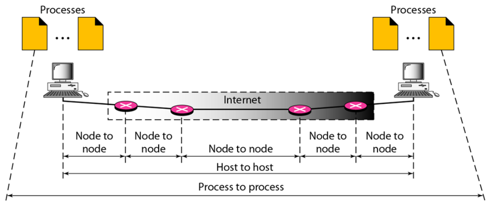
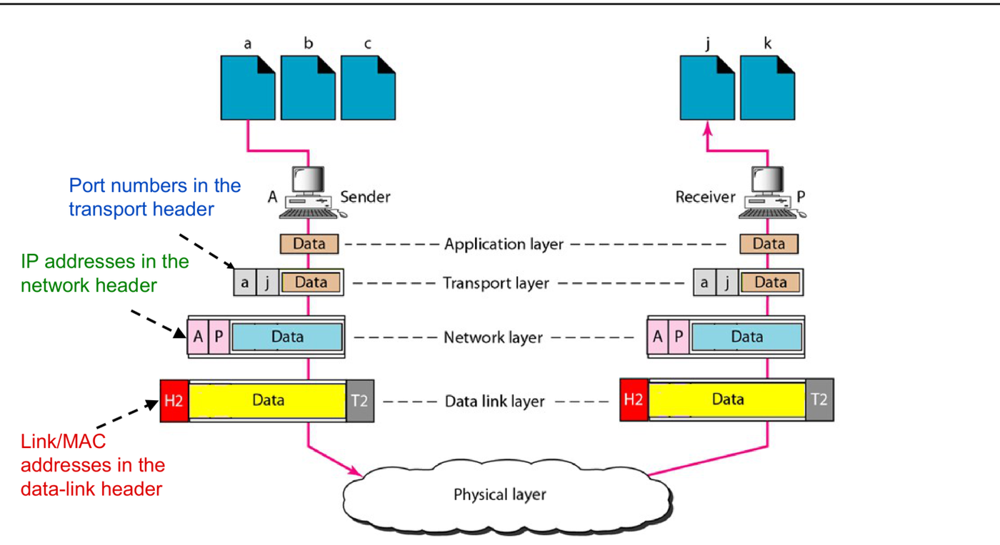
The two hosts run all five layers. A router runs only the physical, data link and network layers. At each router, the network layer picks the next hop. Then the data link layer carries the packet over that one link.
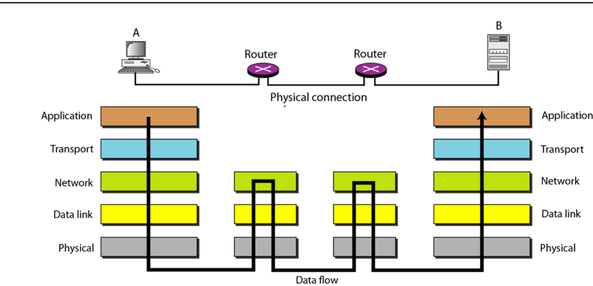
The network layer delivers data from process to process.
False. The network layer delivers host to host. The transport layer delivers process to process, using port numbers.
A router runs all five layers.
False. A router runs the physical, data link and network layers only. It forwards packets and never reads the transport header.
What happens when you open a web page. Each step needs a different part of the course.
| Step | Problem | Solution |
|---|---|---|
| 1 | You typed a name, but routers need an address. | DNS (Lecture 5) |
| 2 | Which network does the address belong to? | IP addressing (Part A) |
| 3 | Which way should the packet go at each router? | Forwarding (Part B) and routing (Lecture 3) |
| 4 | How does the packet cross each link? | Ethernet or Wi-Fi, joined to IP by ARP (Part B) |
| 5 | Which program gets the data? | Port numbers (Lecture 4) |
| 6 | What if packets are lost or out of order? | TCP (Lecture 4) |
| 7 | What do browser and server say? | HTTP (Lecture 5) |
A2. IP basics
IP (Internet Protocol) is the network-layer protocol of the Internet. An IP packet (or datagram) has two parts:
- the IP header: control information, including the source and destination IP addresses;
- the payload: the data after the header, for example a TCP segment.
An Ethernet frame carries the packet over one link. At each router the packet goes into a new frame for the next link.
IP is connectionless: it sends each datagram on its own, with no set-up. IP is also best effort: packets can be lost, delayed, duplicated or reordered, and IP never resends them. TCP, above IP, adds reliability.
The Internet Protocol (IP) provides a reliable service.
False. IP is best effort. It can lose, delay, duplicate or reorder packets, and it does not resend them. TCP adds reliability.
A3. IPv4 addresses
The format
An IPv4 address is a 32-bit number given to a network interface (one Ethernet port, one Wi-Fi connection). We write it as four decimal numbers, one per byte (an octet, 0 to 255), with dots between them.
192 .168 .10 .77
11000000.10101000.00001010.01001101 (8 + 8 + 8 + 8 = 32 bits)A router has one IP address on each interface, and each address belongs to the subnet on that side.
Network part and host part
A MAC address is flat: it says who a device is, not where. If IP addresses were flat too, every router would need one table entry for every computer on Earth. So an IP address has two parts, like a phone number with a country code:
- the network prefix (the leading bits) names the network;
- the host part (the remaining bits) names the interface inside it.
Example: in 155.69.8.3, “155.69” names NTU and “8.3” names one machine. A router far away needs only one route for the whole NTU block.
Subnet, prefix and mask
- A subnet is a group of interfaces with the same network prefix. Hosts in one subnet talk directly, without a router.
- A subnet mask is a 32-bit value. Its leading 1s mark the prefix. Its trailing 0s mark the host bits. The 1s must be one unbroken run.
- Prefix notation writes
/nafter the address, where is the number of 1s in the mask.
| Prefix | Mask | Host bits | Total | Usable |
|---|---|---|---|---|
| /8 | 255.0.0.0 | 24 | 16 777 216 | 16 777 214 |
| /16 | 255.255.0.0 | 16 | 65 536 | 65 534 |
| /20 | 255.255.240.0 | 12 | 4 096 | 4 094 |
| /22 | 255.255.252.0 | 10 | 1 024 | 1 022 |
| /23 | 255.255.254.0 | 9 | 512 | 510 |
| /24 | 255.255.255.0 | 8 | 256 | 254 |
| /25 | 255.255.255.128 | 7 | 128 | 126 |
| /26 | 255.255.255.192 | 6 | 64 | 62 |
| /27 | 255.255.255.224 | 5 | 32 | 30 |
| /28 | 255.255.255.240 | 4 | 16 | 14 |
| /29 | 255.255.255.248 | 3 | 8 | 6 |
| /30 | 255.255.255.252 | 2 | 4 | 2 |
Learn the mask octets: 128, 192, 224, 240, 248, 252, 254, 255. Each one adds the next bit (128, +64, +32, +16, +8, +4, +2, +1).
255.255.253.0 is a valid subnet mask.
False. 253 is 11111101. A 0 comes
before a 1, so the 1s are not one unbroken run.
Network, broadcast and usable addresses
With host bits:
- Network address: all host bits 0. First address of the block. It names the subnet.
- Broadcast address: all host bits 1. Last address of the block. It means “every host on this subnet”.
- Usable addresses: everything in between.
Always count the router interface. A LAN with 62 computers and 1 gateway needs 63 usable addresses. A /26 has only 62, so you need a /25.
A /24 subnet can hold 256 hosts.
False. A /24 has 256 addresses, but the network and broadcast addresses are not for hosts. It holds 254 interfaces, and a router interface is one of them.
CIDR and the old classes
CIDR (Classless Inter-Domain Routing) allows any prefix length. Use the prefix or mask that the question gives. Do not guess the boundary from the first number.
The old classful system fixed the boundary from the first bits. You still need to recognise the classes.
| Class | Leading bits | First octet | Network bits | Hosts per network |
|---|---|---|---|---|
| A | 0 | 0–127 | 8 | |
| B | 10 | 128–191 | 16 | |
| C | 110 | 192–223 | 24 | |
| D | 1110 | 224–239 | — | multicast |
| E | 1111 | 240–255 | — | reserved |
Example: 152.73.184.68 starts with 152, which is in 128–191, so it is Class B.
A Class B address starts with the bits 110 and has a 24-bit network part.
False. Class B starts with 10 and has a 16-bit network part. “110” and 24 bits describe Class C.
A4. From an address to its subnet
The question: given an address and a mask, which block is the address in?
Fast method (block size). The mask cuts the address space into equal blocks that start on multiples of the block size.
- Find the interesting octet: the one octet where the mask is neither 255 nor 0.
- Block size (mask value in that octet).
- List the block starts Find the block that holds the address.
- Network = the start of that block, with 0 in later octets. Broadcast = the next start , with 255 in later octets.
| Address | Mask octet | Block size | Block | Network | Broadcast |
|---|---|---|---|---|---|
| 192.168.10.77/26 | 192 (4th) | 64 | 64–127 | 192.168.10.64 | 192.168.10.127 |
| 10.0.5.94/27 | 224 (4th) | 32 | 64–95 | 10.0.5.64 | 10.0.5.95 |
| 172.20.142.98/22 | 252 (3rd) | 4 | 140–143 | 172.20.140.0 | 172.20.143.255 |
Full method (bitwise AND). . Every other pair gives 0. So address AND mask keeps the prefix and sets every host bit to 0. The result is the network address.
For 192.168.10.77/26: the last mask octet is 192.
01001101 (77) AND 11000000 (192) =
01000000 = 64. The network is 192.168.10.64/26.
Same subnet? AND each address with the mask and compare. With 192.168.10.77/26, the address .126 gives .64 (same, so local). The address .130 gives .128 (different, so remote).
Close is not local. 10.0.5.96 is not in 10.0.5.64/27. It starts the next block. And an address that ends in .0 is not always a network address: in 150.10.100.0/19 the block is .96.0 to .127.255, so .100.0 is an ordinary host.
Tutorial 2.1 Q2. An organization is assigned a /16 IP address block. The organization has created several subnets for its network. It is known that one of the subnets is 145.32.128.0/255.255.224.0. What is the broadcast address for this subnet?
Answer
The mask 255.255.224.0 has 19 ones, so the subnet is a /19. The interesting octet is the 3rd.
In binary, the 3rd octet of the subnet is 10000000 and
the mask is 11100000. The first 3 bits (100)
are the prefix. The other 5 bits and the whole 4th octet are host bits.
Set every host bit to 1: 145.32.10011111.11111111.
Broadcast address = 145.32.159.255.
Check: . The block starts at 128 and ends at . ✓
General method: from an address and a mask to the whole range
- Turn
/ninto a mask, or read the mask. Find the interesting octet. - mask value there.
- The network octet is the multiple of at or below the address octet. Later octets are 0.
- The broadcast octet is the network octet . Later octets are 255.
- Usable = network to broadcast . The count is .
- If the question gives a network address, check that its octet is a multiple of . If not, it is not a network address.
Extension A2.1. A host is configured as 172.16.77.200/18. Find the mask, the network address, the broadcast address, the usable range and the number of usable addresses.
Answer (Extension A2.1)
/18 means 18 ones, so the mask is 255.255.192.0. The interesting octet is the 3rd, with . The block starts are 0, 64, 128, 192, and 77 is in 64–127.
- Network: 172.16.64.0/18
- Broadcast: 172.16.127.255
- Usable: 172.16.64.1 to 172.16.127.254, which is addresses.
Check: . ✓
A5. Equal-size subnetting
The question: how do I cut one block into smaller blocks of the same size?
Subnetting divides a parent block into non-overlapping child blocks by making the prefix longer. Going from / to / uses extra bits to number the children. So the parent holds children, each with host bits. More subnets means fewer addresses in each one. The total does not grow.
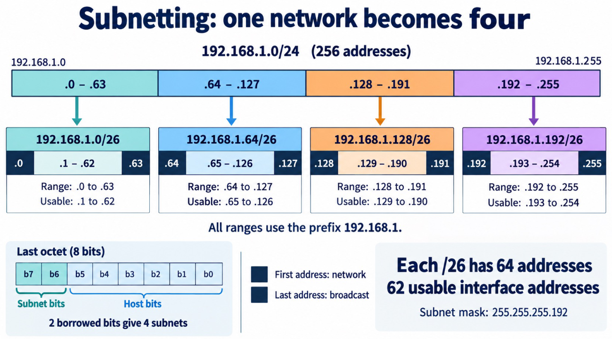
Method. Two things must both fit: the largest subnet, and the number of subnets (include future ones). Size first, then count.
- Interfaces needed = hosts + 1 for the router.
- Smallest with interfaces. Prefix .
- Count check: the number of subnets.
If the count check fails, you need a bigger parent or subnets of different sizes (Section A6).
Lecture example. Parent 10.20.0.0/20. There are 6 departments, each with up to 300 computers and 1 gateway.
- Size: 301 interfaces. , so and the prefix is /23.
- Count: bits give subnets. ✓
- The 3rd octet goes up by each time.
| Use | Subnets |
|---|---|
| Departments 1 to 6 | 10.20.0.0/23, 10.20.2.0, 10.20.4.0, 10.20.6.0, 10.20.8.0, 10.20.10.0 |
| Reserved | 10.20.12.0/23 and 10.20.14.0/23 |
A6. VLSM: subnets of different sizes
The question: what if the LANs have very different sizes?
VLSM (Variable-Length Subnet Masking) gives each segment its own prefix. A big LAN gets a big block. A link between two routers needs only 2 addresses, so it gets a /30.
Method.
- List every segment that needs a subnet: every LAN and every router-to-router link.
- Size each one (hosts + router interfaces) and choose the smallest prefix.
- Check the total. The block sizes must add up to no more than the parent.
- Place fixed blocks first. If the question names a host address, the subnet must contain it. A block already in use is fixed too.
- Then largest first. Each block must start on a multiple of its own size. This leaves no unusable gaps.
- Give each router interface a usable address in its subnet. Both ends of a /30 take the two usable addresses. Skip any address a host already has.
- Check: enough capacity, aligned, no overlap, every address unique.
If the total does not fit, re-read what the host counts include. One extra address can double a block. State your assumption.
Lecture example. Parent 192.168.50.0/24. LAN A has 100 computers, LAN B 50, LAN C 20, LAN D 10. Each LAN also needs one gateway. Four routers R1–R4 are joined by four links.
| Segment | Needs | Prefix | Subnet | Usable | Router interface |
|---|---|---|---|---|---|
| LAN A | 101 | /25 | 192.168.50.0/25 | .1 – .126 | R1: .1 |
| LAN B | 51 | /26 | .128/26 | .129 – .190 | R2: .129 |
| LAN C | 21 | /27 | .192/27 | .193 – .222 | R3: .193 |
| LAN D | 11 | /28 | .224/28 | .225 – .238 | R4: .225 |
| R1–R2 | 2 | /30 | .240/30 | .241 – .242 | R1 .241, R2 .242 |
| R1–R3 | 2 | /30 | .244/30 | .245 – .246 | R1 .245, R3 .246 |
| R2–R4 | 2 | /30 | .248/30 | .249 – .250 | R2 .249, R4 .250 |
| R3–R4 | 2 | /30 | .252/30 | .253 – .254 | R3 .253, R4 .254 |
Total: . It fits exactly.
Two sizes in one parent: Tutorial 2.1 Q1
Tutorial 2.1 Q1. A university has been allocated the 155.69.0.0/16 address block. As the network administrator of the university, you have been asked to subnet the network. There are presently 10 schools in the university, and it may increase to 15 over the next few years. Currently, each school has a maximum number of host stations of 2000, but three schools are growing and may have 4000 hosts in a couple of years later. Determine the subnet address/subnet mask for each school.
Answer
Plan for the 15 schools of the future: 3 schools with 4000 hosts and 12 with 2000.
Sizes.
- 4000 + 1 router = 4001. , so the prefix is /20. Mask 255.255.240.0.
- 2000 + 1 = 2001. , so the prefix is /21. Mask 255.255.248.0.
Fit. Count in units of /21. A /16 holds 32 of them. A /20 is 2 units. The plan needs , so it fits. 7 blocks of /20 stay free.
Placement. Big blocks first. The 3rd octet moves by 16 for a /20 and by 8 for a /21.
| Schools | Subnets | Mask |
|---|---|---|
| 1–3 (4000 hosts) | 155.69.0.0/20, 155.69.16.0/20, 155.69.32.0/20 | 255.255.240.0 |
| 4–15 (2000 hosts) | 155.69.48.0/21, .56.0, .64.0, .72.0, .80.0, .88.0, .96.0, .104.0, .112.0, .120.0, .128.0, .136.0 (all /21) | 255.255.248.0 |
| Free | 155.69.144.0 to 155.69.255.255 |
The official slide places its blocks elsewhere. Any aligned blocks that do not overlap are correct.
Check: the last /21 starts at and ends at 143.255. The free space starts at 144.0. ✓
General method: two or more subnet sizes in one parent block
- Plan for the future count, not the present one.
- Find the prefix for each size (hosts + router interface).
- Measure every block in units of the smallest prefix. Add the units and compare with the parent.
- Place the biggest blocks first, each on a multiple of its own size. Then place the smaller ones.
- Write the free space as aligned blocks.
LANs and router links in one /24: Tutorial 2.1 Q3
Tutorial 2.1 Q3. Figure Q3 shows a network consisting of four subnets being interconnected by four routers. The integer on each link indicates the cost of that link. As a network engineer, you are allocated the IP address range 193.169.1.0/24 to support the network. Assign suitable IP address/subnet mask to each interface of the routers.
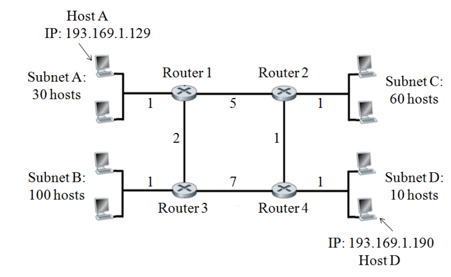
Clarification for Q3 (this question only): “hosts” in Figure Q3 means the number of IP addresses each LAN needs, including the address for its router interface. For example, Subnet A’s “30 hosts” means 29 end hosts plus 1 router interface. Do not add another address for the router.
Answer
Step 1: sizes. There are four LANs and four router links. The link costs are for routing (Lecture 3), so ignore them here.
| Segment | Addresses | Prefix | Block size |
|---|---|---|---|
| Subnet A | 30 | /27 (30 usable) | 32 |
| Subnet B | 100 | /25 (126 usable) | 128 |
| Subnet C | 60 | /26 (62 usable) | 64 |
| Subnet D | 10 | /28 (14 usable) | 16 |
| 4 links | 2 each | /30 | 4 each |
Total . It fits the /24 exactly.
Step 2: fixed blocks first. The two host addresses pin two subnets.
- Host A is .129, so Subnet A is the /27 that holds it: 193.169.1.128/27 (.128–.159).
- Host D is .190, so Subnet D is the /28 that holds it: 193.169.1.176/28 (.176–.191).
Step 3: the rest.
- Subnet B needs a /25. The upper /25 (.128–.255) holds A and D, so B is 193.169.1.0/25.
- Subnet C needs a /26. The only free aligned /26 is 193.169.1.192/26.
- The four /30 links share what is left, .160–.175: .160/30, .164/30, .168/30, .172/30.
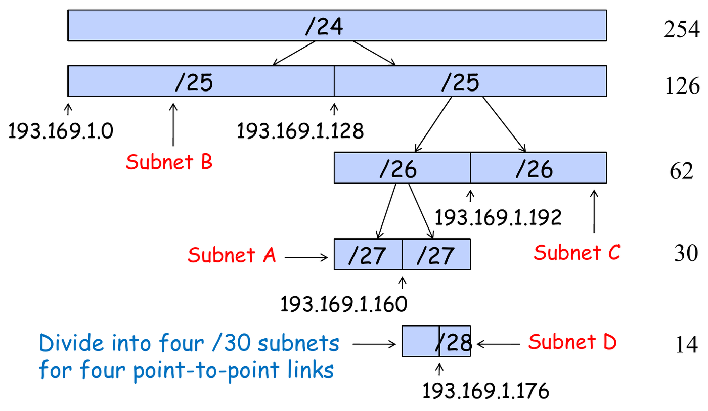
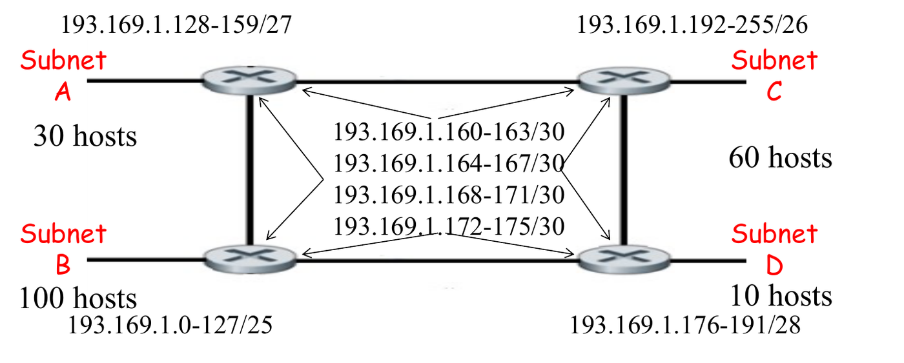
Step 4: interface addresses. The slide does not match the /30 blocks to links. This table makes one choice (unofficial).
| Router | Interface | Address / mask |
|---|---|---|
| Router 1 | to Subnet A | 193.169.1.158/27 (not .129, Host A uses it) |
| Router 1 | to Router 2 | 193.169.1.161/30 |
| Router 1 | to Router 3 | 193.169.1.165/30 |
| Router 2 | to Subnet C | 193.169.1.193/26 |
| Router 2 | to Router 1 | 193.169.1.162/30 |
| Router 2 | to Router 4 | 193.169.1.169/30 |
| Router 3 | to Subnet B | 193.169.1.1/25 |
| Router 3 | to Router 1 | 193.169.1.166/30 |
| Router 3 | to Router 4 | 193.169.1.173/30 |
| Router 4 | to Subnet D | 193.169.1.177/28 (not .190, Host D uses it) |
| Router 4 | to Router 2 | 193.169.1.170/30 |
| Router 4 | to Router 3 | 193.169.1.174/30 |
The link blocks are R1–R2 = .160/30, R1–R3 = .164/30, R2–R4 = .168/30, R3–R4 = .172/30.
Check: every address is inside its subnet, no blocks overlap, and no router address equals a host address. ✓
General method: a network of LANs and router links in one block
- List the segments: one per LAN, one per router link. Ignore link costs.
- Size each one and add the block sizes. Stop if the total is more than the parent.
- Fixed addresses first. Place the block that holds each given host address. Largest-first alone would put C at .128/26 and break Host A.
- Largest first for the rest, each block on a multiple of its own size.
- Give each router interface an address in its subnet, skipping any host address. Both ends of a /30 take the two usable addresses.
- Check each address against its block.
Extension A3.1. Remove the clarification of Q3. Now “30 hosts” means 30 computers, and each LAN also needs one router interface. Do the four LANs and four links still fit in 193.169.1.0/24?
Answer (Extension A3.1)
The sizes become 31, 101, 61 and 11 interfaces.
| Segment | Interfaces | Prefix | Block size |
|---|---|---|---|
| Subnet A | 31 | /26 (62 usable) | 64 |
| Subnet B | 101 | /25 | 128 |
| Subnet C | 61 | /26 | 64 |
| Subnet D | 11 | /28 | 16 |
| 4 links | 2 each | /30 | 16 in total |
Total . It does not fit. One extra address for Subnet A moves it from a /27 to a /26 and the plan overflows. This is why the question states the clarification.
Extension A3.2. The parent is 10.1.1.0/24. Each count below already includes the router interface. LAN P needs 100 addresses, LAN Q needs 40 and LAN R needs 20. Two router links need a /30 each. A server in LAN R must keep the address 10.1.1.40. Allocate the subnets and give the router interfaces.
Answer (Extension A3.2)
Sizes. P: /25 (128). Q: /26 (64). R: /27 (32). Two links: 8 in total. Total . It fits.
Placement.
- Fixed block first. R’s /27 must hold .40, so R is 10.1.1.32/27 (.32–.63).
- P needs a /25. The lower /25 holds R, so P is 10.1.1.128/25.
- Q needs a /26. The block .0/26 holds R. The next one is free, so Q is 10.1.1.64/26.
- The links use the space left, .0–.31: 10.1.1.0/30 and 10.1.1.4/30.
Plain “largest first” would put P at .0/25, and the server’s .40 would land in P.
| Interface | Address / mask |
|---|---|
| Router on LAN P | 10.1.1.129/25 |
| Router on LAN Q | 10.1.1.65/26 |
| Router on LAN R | 10.1.1.33/27 (not .40, the server uses it) |
| Link 1 | 10.1.1.1/30 and 10.1.1.2/30 |
| Link 2 | 10.1.1.5/30 and 10.1.1.6/30 |
A7. Smallest subnet for two addresses, and route aggregation
The question: which one block holds these addresses?
Write the first octet where the addresses differ in binary. Count the leading bits that all of them share. The prefix is 8 for each full octet before it, plus the shared bits in that octet.
Extension A7.1. Find the smallest subnet (longest prefix) that holds both addresses, and give its mask. (a) 20.30.150.10 and 20.30.158.5. (b) 60.1.130.4 and 60.1.20.9.
Answer (Extension A7.1)
(a) The first two octets match: 16 bits. The 3rd octet differs:
150 = 1001 0110
158 = 1001 1110
1001 → 4 bits matchThe prefix is . The mask is 255.255.240.0. The subnet is 150 AND 240 = 144, so 20.30.144.0/20.
(b) and . They differ at the first bit, so the prefix is /16, the mask is 255.255.0.0, and the subnet is 60.1.0.0/16.
Check (a): 20.30.144.0/20 covers 144–159, and 150 and 158 are inside. ✓
Route aggregation. A router can replace many routes with one shorter prefix that covers them all. This makes the routing table smaller. The method is the same, applied to many networks.
Extension A7.2. A router has routes to 10.5.72.0/24, 10.5.73.0/24, 10.5.74.0/24, 10.5.75.0/24 and 10.5.78.0/24. Find one aggregate route. Does it cover any address that is not in the list?
Answer (Extension A7.2)
Only the 3rd octet changes:
72 = 0100 1000
73 = 0100 1001
74 = 0100 1010
75 = 0100 1011
78 = 0100 1110
^^^^ ^ 5 shared bitsThe prefix is . The aggregate route is 10.5.72.0/21, which covers 10.5.72.0 to 10.5.79.255.
It also covers the networks 76, 77 and 79, which were not in the list. An aggregate always covers a whole aligned block. This is fine if those addresses are unused or go the same way. If not, the router needs more specific routes for them, and longest-prefix match (Part B) picks those first.
Check: , and 72 is a multiple of 8. ✓
A8. Private addresses and NAT
The question: IPv4 has too few addresses. How do millions of homes share them?
IPv4 has only billion addresses. There are two fixes: private addresses with NAT (used in almost every home), and IPv6 with 128-bit addresses.
IPv6 doubles the address space of IPv4.
False. IPv6 addresses have 128 bits, against 32. That is times as many addresses, not twice as many.
Private blocks
| Block | Range | Typical use |
|---|---|---|
| 10.0.0.0/8 | 10.0.0.0 – 10.255.255.255 | Organisations |
| 172.16.0.0/12 | 172.16.0.0 – 172.31.255.255 | Organisations |
| 192.168.0.0/16 | 192.168.0.0 – 192.168.255.255 | Home routers |
Many separate networks reuse these addresses. The public Internet does not route them. “Private” does not mean “same subnet”: the mask decides that.
Ports and NAPT
A port number (16 bits, in the transport header)
names the program on a host. IP:port names
one end of a connection, for example 192.168.1.10:50000. A
web server uses a well-known port (80 for HTTP, 443 for HTTPS). The
client’s operating system picks a temporary source port for each
connection.
- NAT (Network Address Translation): a router changes the IP addresses of packets that cross between a private network and the Internet.
- NAPT (Network Address and Port Translation), also called PAT: the router also changes the port. Many private hosts can then share one public IP address.
The router keeps a translation table:
- Outgoing packet: it changes the source private IP:port to its public IP:new port, and saves the mapping.
- Reply: it looks up the mapping and changes the destination back to the private IP:port.
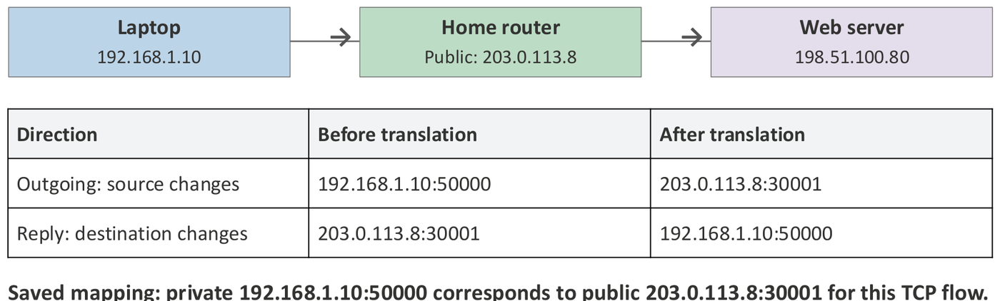
Two hosts can use the same source port. The different public ports tell their connections apart.
| Inside | After NAPT (public 203.0.113.5) | Reply goes back to |
|---|---|---|
| 10.0.0.10:50000 | 203.0.113.5:61001 | 10.0.0.10:50000 |
| 10.0.0.20:50000 | 203.0.113.5:61002 | 10.0.0.20:50000 |
- CGNAT (carrier-grade NAT): the ISP runs a second NAT, so many customers share one public address. The home router’s ISP side then has an address in 100.64.0.0/10, a shared range that is neither public nor private.
- Port forwarding: an outside host cannot start a connection to a private server, because no mapping exists yet. A forwarding rule creates a fixed mapping, for example public 203.0.113.5:443 → 192.168.40.25:443. With CGNAT, a home rule alone is not enough.
The public Internet routes packets to private addresses such as 192.168.1.10.
False. Private addresses are for use inside one network, and many networks reuse them. A NAT router changes them to a public address at the edge.
With NAPT, the MAC addresses in a packet stay the same from the private host to the server.
False. MAC addresses change on every link, because each frame goes from one interface to the next on that link. The IP addresses and ports change only at the NAT router.
Extension AE1. Fill in the header table. Host A
(private 192.168.5.20, MAC MAC-A) opens a connection from
port 51000 to server B (203.0.113.80, MAC MAC-B) on port
443. Router R does NAPT with public address 198.51.100.7. R’s MAC is
MAC-R1 on A’s side and MAC-R2 on B’s side. R
maps the connection to public port 62001. P1 and P2 are the request. P3
and P4 are the reply. Fill in the MAC, IP and port fields of each
packet.
Answer (E1)
| P1 (A → R) | P2 (R → B) | P3 (B → R) | P4 (R → A) | |
|---|---|---|---|---|
| Dest. MAC | MAC-R1 | MAC-B | MAC-R2 | MAC-A |
| Source MAC | MAC-A | MAC-R2 | MAC-B | MAC-R1 |
| Source IP | 192.168.5.20 | 198.51.100.7 | 203.0.113.80 | 203.0.113.80 |
| Dest. IP | 203.0.113.80 | 203.0.113.80 | 198.51.100.7 | 192.168.5.20 |
| Source port | 51000 | 62001 | 443 | 443 |
| Dest. port | 443 | 443 | 62001 | 51000 |
- The MAC addresses change on every link. In P1, A sends to the router’s MAC, not B’s, because B is not on A’s link.
- The bold cells are the ones R changes. B never sees A’s private address. B replies to 198.51.100.7:62001.
- R looks up port 62001 in its table and changes the reply’s destination back to 192.168.5.20:51000.
General method: tracing a packet through NAPT
- Draw one column per link crossing: the request on each side of the router, then the reply on each side.
- MACs: source = the interface that sends on this link. Destination = the next interface on this link. Never the far end, unless it is on this link.
- Private side: the host’s private IP:port and the server’s IP:port.
- Public side: the router’s public IP and the translated port replace the source on the request. The reply uses them as the destination.
- The reply swaps source and destination, and the router undoes the translation.
A9. Getting IP settings: static or DHCP
The question: how does a host learn its address?
A host needs five settings.
| Setting | Example | Role |
|---|---|---|
| IPv4 address | 192.168.1.68 | This interface’s address |
| Subnet mask | 255.255.255.0 | Defines the local subnet (/24) |
| Default gateway | 192.168.1.254 | The router for any destination that is not local |
| DNS server | 192.168.1.254 | Changes names into IP addresses |
| DHCP server | 192.168.1.254 | Gave the host its settings |
You can type them in (static) or get them automatically with DHCP.
DHCP
DHCP (Dynamic Host Configuration Protocol) gives a host its address, mask, gateway and DNS server. An administrator sets up a pool of addresses, for example .30–.50. The pool is only part of the subnet. A printer at a fixed .20 outside the pool is still valid. The host gets the address on a lease (for example 8 hours) and can renew it.
The problem: the host has no address yet, so how can it talk? It uses four messages, DORA.
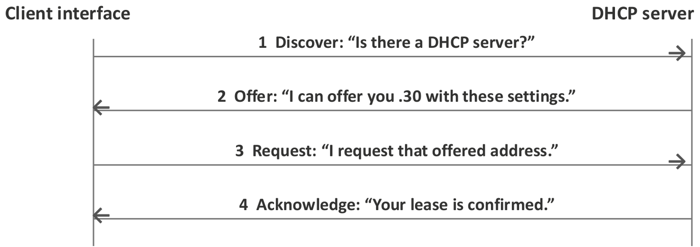
- Discover: the client broadcasts “Is there a DHCP server?”
- Offer: the server offers an address and the settings.
- Request: the client asks for the offered address.
- Acknowledge: the server confirms the lease.
Routers do not forward a local broadcast. To reach a server on another LAN, a DHCP relay passes the messages on.
Suppose the server is 10.0.0.1 and offers 10.0.0.50. If the server replies by unicast:
| # | Source IP | Destination IP | Message |
|---|---|---|---|
| 1 | 0.0.0.0 | 255.255.255.255 | Discover |
| 2 | 10.0.0.1 | 10.0.0.50 | Offer |
| 3 | 0.0.0.0 | 255.255.255.255 | Request |
| 4 | 10.0.0.1 | 10.0.0.50 | Acknowledge |
The client sends both its messages from 0.0.0.0, because it owns no address until the ACK. Some servers broadcast the Offer and ACK instead. Use whichever the question states.
A DHCP Request is sent from the address that the server offered.
False. The client does not own the offered address until the ACK arrives. It sends the Request from 0.0.0.0 to 255.255.255.255.
What the home router does: Tutorial 2.3 Q3
Tutorial 2.3 Q3. A user subscribes to an ISP home
broadband service and connects his computer directly to it via an ADSL
modem as shown in Figure Q3a. An extract of the output by the
ipconfig command issued on the computer is shown in Figure
Q3b.
Based on Figure Q3a and Q3b, deduce the roles performed by the ADSL modem, and briefly describe the purpose of each role.
The user launches his web browser and requests for the default web page at http://www.ntu.edu.sg without the use of web proxy. Assume that all the caches of the computer are initially empty. Using a table similar to Table Q3, list the sequence of frames being sent and received by the computer until the first frame containing the requested web page is received.
Part (b) needs the application layer (HTTP and DNS). It needs Lecture 5. Only part (a) is answered here.
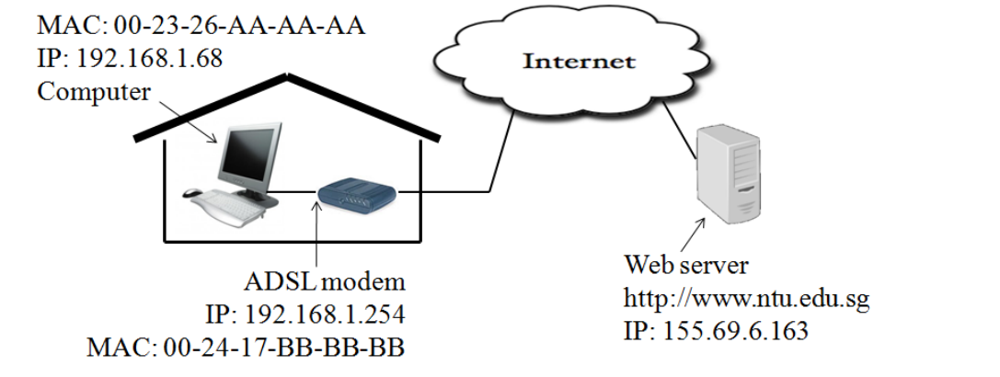
c:\>ipconfig /all
Ethernet adapter Local Area Connection:
Physical Address . . . . . . . . . . . : 00-23-26-AA-AA-AA
DHCP Enabled . . . . . . . . . . . . : Yes
IPv4 Address . . . . . . . . . . . . . . : 192.168.1.68
Subnet Mask . . . . . . . . . . . . . . : 255.255.255.0
Default Gateway . . . . . . . . . . . : 192.168.1.254
DHCP Server . . . . . . . . . . . . . : 192.168.1.254
DNS Server . . . . . . . . . . . . . . . : 192.168.1.254Answer (a), unofficial: no solution was released
The computer lists the modem’s address, 192.168.1.254, for three settings. Each one shows a role:
- Default gateway. The computer sends every packet for a destination outside 192.168.1.0/24 to the modem. So the modem is the router between the home LAN and the ISP.
- DHCP server. “DHCP Enabled: Yes” and the DHCP server 192.168.1.254 show that the modem gave the computer its address, mask, gateway and DNS server.
- DNS server. The computer asks the modem to change names into IP addresses. The modem answers, or passes the question to the ISP’s DNS server (a proxy).
Two more roles follow from the figure and the address:
- NAT. 192.168.1.68 is a private address, and the Internet does not route it. The modem must change it to the public address from the ISP, so the web server can reply.
- Modem. It sends the bits over the ADSL line to the ISP, and turns the ISP’s signal back into bits for the home.
General method: reading an ipconfig output
- Put the address and mask side by side. They give the local subnet (here 192.168.1.0/24).
- If the gateway, DHCP server and DNS server are the same address, one box does all three jobs.
- If the host address is private, a NAT router must sit between it and the Internet.
- If the box also connects to the ISP over a phone line (ADSL), it also has the modem role.
- For each role, give one sentence on its purpose.
Why have subnets at all?
- To organise addresses: each department gets a block, with room to grow.
- To limit broadcasts: an ARP broadcast stays on its own LAN.
- To apply access rules: traffic between subnets passes a router, where rules can allow or deny it.
Putting two departments on separate subnets stops them from talking to each other.
False. With working routes, separate subnets can talk through the router. To restrict access, you need access-control rules on a router or firewall.
Exam patterns
Tutorial sources: Tutorial 2.1 Q1 (two subnet sizes), Q2 (broadcast address), Q3 (LANs and router links, with fixed hosts); Tutorial 2.3 Q3a (home router roles). The other patterns come from the lecture’s examples. Past-year papers are not on this page.
| Question type | How to attack it | Trap |
|---|---|---|
| Network, broadcast, usable range | Block size in the interesting octet, then the block that holds the address | Treating .0 as always a network address. Wrong octet for the mask. |
| Same subnet, or list of members | AND with the mask, or test each octet against the block | Checking only the interesting octet. Trusting numbers that are close. |
| Prefix for N hosts | Add the router interface, then smallest with | Forgetting the router. Using instead of . |
| Equal-size subnets | Size first, then check the count with | Checking only one of the two |
| VLSM with LANs and links | Size all, check the total, fixed blocks first, largest first, /30 for links | Largest-first before the fixed host. Forgetting the links. An unaligned block. |
| Assign router interfaces | Both ends of a /30 take the two usable addresses. Skip host addresses. | Using the network or broadcast address. Using a host’s address. |
| Smallest subnet for two addresses, or aggregate route | Shared leading bits in the first octet that differs | Counting bits from the wrong octet. Forgetting that the whole block is covered. |
| NAPT header table | One column per link. MACs change every link. IP and port change at the router. | Using the server’s MAC on the first link |
| DHCP messages | Discover and Request: 0.0.0.0 → 255.255.255.255 | Giving the client the offered address too early |
| Home router roles | Same address for gateway, DHCP and DNS = one box. Private address = NAT. | Naming only “router” and “modem” |
| True/false | IP is best effort. Class B starts with 10. IPv6 is 128 bits. Private is not routed. | See Common Traps |
Common Traps
- Block size first. Write the mask in decimal and find the block size before anything else.
- Network = host bits 0. Broadcast = host bits 1. Usable .
- .0 and .255 prove nothing. Only the mask says which address is the network or broadcast.
- Count the router interface in every LAN, unless the question says the count already includes it.
- Align every block. A network address must be a multiple of its block size. 172.16.112.0/19 is not a valid block.
- Close is not local. AND each address with the mask.
- Use the given prefix. Never guess it from the first octet. Class B starts with bits 10 and has a 16-bit network part.
- VLSM order: fixed blocks first, then largest first, every block aligned, /30 for router links. Check that the total fits before you allocate.
- Router address clashes. A router interface must not take a host’s address.
- Aggregation covers the whole block, including networks that were not in your list.
- NAT: MAC addresses change on every link. The IP and port change only at the NAT router.
- IPv6 has 128 bits, four times the bits of IPv4, not double the addresses.
- Private addresses are not routed on the Internet. “Private” does not mean “same subnet”.
- DHCP: Discover and Request go 0.0.0.0 → 255.255.255.255.
- IP is best effort, not reliable.
- Subnets do not block traffic on their own. Access rules on a router or firewall do.
Lecture 2, Part B: Forwarding, ARP, Fragmentation and ICMP
This part covers the second half of Part II Lecture 2. It answers four questions:
- When a host or router has a packet, where does it send it next? (Forwarding, longest-prefix match.)
- How does it find the MAC address of that next device? (ARP.)
- What happens when a packet is too big for the next link? (Fragmentation.)
- How do we test the path? (ICMP, ping, traceroute.)
The exam asks you to list the frames seen at a station during a ping, pick a route with longest-prefix match, build a fragmentation table, and rebuild a topology from traceroute outputs.
The questions sit in drawers after the concept they test. Tutorial 2.1 Q4 and Tutorial 2.2 Q1 to Q3 have official solutions. Concept checks and extensions are unofficial. Past-year papers are not in these notes. Tutorial 2.2 Q4 (Dijkstra) is in Lecture 3.
Quick reference
| Topic | Rule |
|---|---|
| Local or remote | AND the destination with your own mask. Same network = local: ARP for the destination. Different = remote: ARP for the gateway. The IP destination never changes. |
| Longest-prefix match | Keep the entries that contain the destination. Take the largest
/n. 0.0.0.0/0 matches everything and loses to
any other match. |
| ARP | Request = Ethernet broadcast FF:FF:FF:FF:FF:FF. Reply =
unicast. Asks for the next-hop IP. Routers never
forward it. |
| Switch | Learns the source MAC and port. Forwards on the destination MAC. Floods broadcast and unknown unicast. |
| Router, per hop | New frame (new MAC pair), TTL , checksum recalculated. IP source and destination stay the same (no NAT). |
| Fragment data size | for every fragment except the last |
| Fragments | Count . Offset = start byte / 8. Total Length = data + 20. Same ID. MF = 1 except the last. |
| Reassembly | Only at the destination. One lost fragment loses the datagram: . |
| DF = 1 | Router drops an oversized packet and sends ICMP “fragmentation needed”. |
| TTL | Each router subtracts 1. At 0 the router drops the packet and sends ICMP Time Exceeded. |
| Traceroute | Probes with TTL 1, 2, 3, … Each router answers with the interface
towards the source. * = no reply. |
| Ping | Echo Request and Echo Reply (ICMP). A reply proves ICMP works, not the application. |
B1. Forwarding
B1.1 Terms
- Forwarding: the decision to send a packet out of a particular interface towards its destination. It is one lookup in a table for each packet.
- Routing: the process that fills in that table (Lecture 3).
- Next hop: the device that should get the packet next. It is either the destination itself (when the destination is on the same subnet) or a router.
- Routing table: a list of entries. Each entry maps a destination prefix to an outgoing interface and, if needed, a next-hop router.
- Default route: 0.0.0.0/0. It matches every destination.
- Default gateway: the next-hop router for a host’s default route. The host uses it when no more specific route matches.
B1.2 How a host decides: local or remote
- AND the destination address with its own mask.
- Compare the result with its own network address.
- Same: the destination is local (on-link). Send the frame directly to the destination.
- Different: the destination is remote. Send the frame to the default gateway.
In both cases, the IP destination stays the final host. Only the next hop changes.
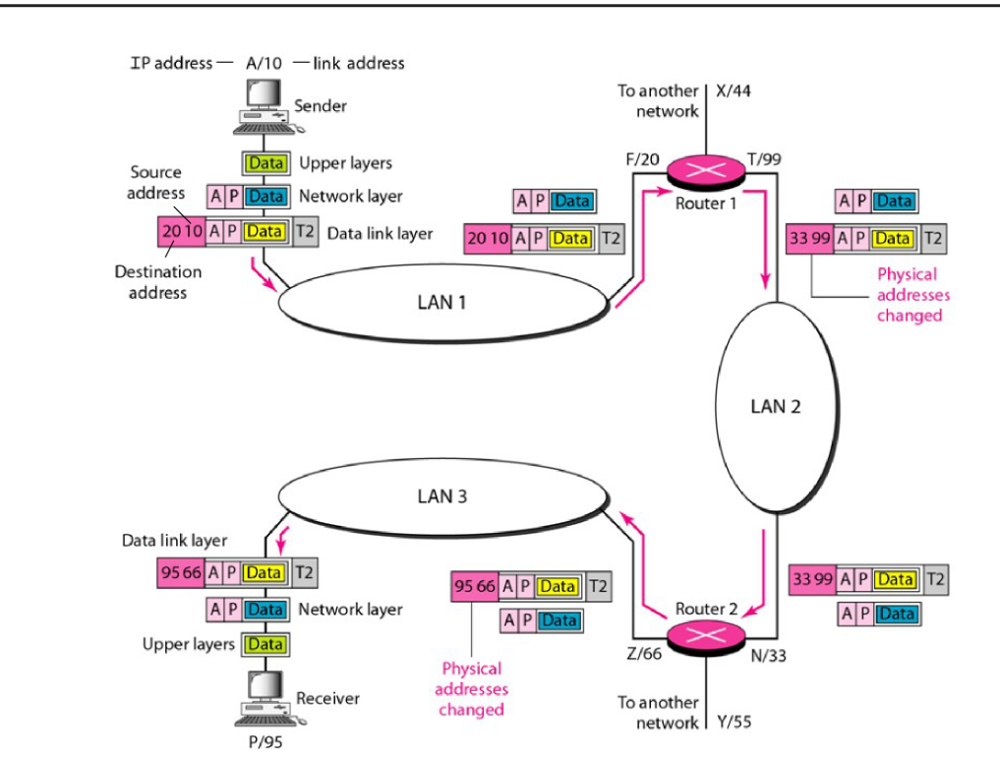
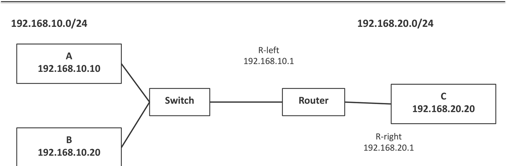
Host A (192.168.10.10/24, gateway 192.168.10.1) has this table:
| Destination prefix | Next hop | Interface |
|---|---|---|
| 192.168.10.0/24 | the destination itself | A’s Ethernet |
| 0.0.0.0/0 | 192.168.10.1 | A’s Ethernet |
- To B (192.168.10.20): it is local, so A sends directly.
- To C (192.168.20.20): it is remote, so A sends to the gateway.
B1.3 Why the mask matters
The same two addresses can be local or remote. It depends only on the mask. A = 172.16.10.5 and the destination is 172.16.200.9.
| Host mask | A’s network | Destination’s network | Decision |
|---|---|---|---|
| /16 | 172.16.0.0 | 172.16.0.0 | Local: ARP for the destination itself |
| /24 | 172.16.10.0 | 172.16.200.0 | Remote: send to the gateway |
A wrong mask breaks things. In the lecture, a laptop with .10/24 instead of .10/26 thinks server .70 is local. It sends an ARP request for .70. That broadcast stays on its own LAN, so nobody answers, and the traffic fails. With the correct /26, the laptop ARPs for gateway .1 instead.
B1.4 Longest-prefix match
Several entries can match one destination. The router chooses the match with the longest prefix, because it describes the most specific block. The default route /0 is the least specific, so it is the last choice.
Method:
- For each entry, check whether the destination is inside that block. (AND the destination with the entry’s mask and compare.)
- Among the matches, choose the one with the largest .
Lecture example: the destination is 10.20.18.7. The entries 0.0.0.0/0, 10.0.0.0/8, 10.20.0.0/16 and 10.20.18.0/24 all match. Choose /24.
The /22 inside a /20 shows why this works: longest-prefix match lets a router send most of a block one way and a small part of it another way.
E1. Choose the route. A router has this table.
| Network | Mask | Interface |
|---|---|---|
| 0.0.0.0 | 0.0.0.0 | Idx0 |
| 150.20.32.0 | 255.255.240.0 | Idx1 |
| 160.5.128.0 | 255.255.192.0 | Idx2 |
| 150.20.40.0 | 255.255.252.0 | Idx3 |
Which interface does it use for the destinations 150.20.42.7, 160.5.190.1, 150.20.47.16 and 9.9.9.9?
Answer (E1)
First write each entry as a block (Part A, Section A4).
| Mask | Prefix | Block size (interesting octet) | Covers |
|---|---|---|---|
| 255.255.240.0 | /20 | 16 (3rd octet) | 150.20.32.0 – 150.20.47.255 |
| 255.255.192.0 | /18 | 64 (3rd octet) | 160.5.128.0 – 160.5.191.255 |
| 255.255.252.0 | /22 | 4 (3rd octet) | 150.20.40.0 – 150.20.43.255 |
| Destination | Entries that match | Chosen |
|---|---|---|
| 150.20.42.7 | /0, /20, /22 | Idx3 (the /22 is the longest) |
| 160.5.190.1 | /0, /18 | Idx2 |
| 150.20.47.16 | /0, /20 (47 is outside 40–43, so the /22 fails) | Idx1 |
| 9.9.9.9 | /0 only | Idx0 (the default route) |
General method: longest-prefix match
- Turn every mask into a prefix length and a block (start and end).
- For the destination, list every entry whose block contains it. The default route always does.
- Take the entry with the largest prefix length.
- If a table also has next hops, read the next hop of that entry. If it says “on-link”, send to the destination itself.
B1.5 Reading a real routing table
On Windows, route print shows the table. “0.0.0.0 with
mask 0.0.0.0” is the default route. “On-link” means the destination is
directly reachable (no gateway). First match the destination and the
mask. Then read the gateway and the interface.
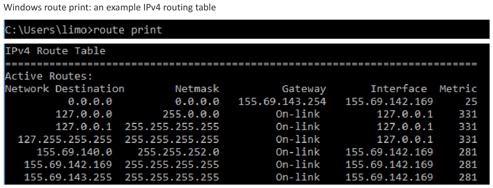
A host sends a packet for a remote destination with the destination IP set to the gateway’s address.
False. The IP destination stays the final host. Only the Ethernet destination is the gateway’s MAC.
B2. ARP: From an IP Address to a MAC Address
B2.1 Why we need ARP
Forwarding gives the IP address of the next hop. But an Ethernet frame needs the next hop’s MAC address. ARP (Address Resolution Protocol) finds the MAC address for an IPv4 address on the local link.
B2.2 How ARP works
- The host looks in its ARP cache (a table of IP → MAC pairs it has learnt).
- If the pair is missing, it sends an ARP request as
an Ethernet broadcast (destination MAC
FF:FF:FF:FF:FF:FF): “Who has 192.168.10.20? Tell 192.168.10.10.” - The device that owns that IP sends an ARP reply as a unicast: “192.168.10.20 is at MAC B.”
- The host saves the pair in its cache. The other device also learns the sender’s pair from the request.
| Field | ARP request | ARP reply |
|---|---|---|
| Ethernet source | A | B |
| Ethernet destination | FF:FF:FF:FF:FF:FF (broadcast) | A |
| Sender IP | 192.168.10.10 | 192.168.10.20 |
| Target IP | 192.168.10.20 | 192.168.10.10 |
- ARP stays on the local link. Routers do not forward ARP broadcasts.
- An ARP request is an Ethernet broadcast, not an IP broadcast.
- Which IP does ARP ask for? The next-hop IP. For a remote destination, that is the gateway’s IP, not the final destination’s IP.
Remote server example: A is 192.168.10.10/24 with gateway .1, and the server is 203.0.113.80. ARP target = 192.168.10.1. Ethernet destination = the gateway’s MAC. IP destination = 203.0.113.80.
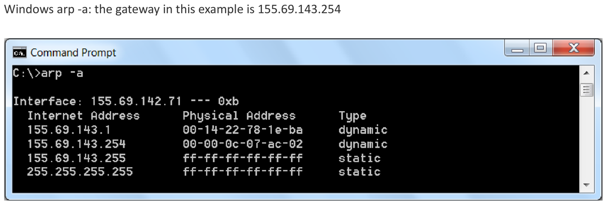
B2.3 Three tables, three devices
| Table | Maps | Used by |
|---|---|---|
| ARP cache | next-hop IPv4 → MAC | a host or router that builds a frame |
| Switch forwarding table | MAC → switch port | a switch that forwards a frame |
| Routing table | destination prefix → next hop / interface | a host or router that forwards an IP packet |
The route lookup chooses the next hop. ARP finds its MAC. The switch chooses the output port.
B2.4 How an Ethernet switch learns
- When a frame arrives, the switch learns its source MAC and the port it came in on.
- For a known unicast destination, it forwards the frame only out of the learnt port. If that port is the incoming port, it does not forward the frame at all.
- For a broadcast or an unknown unicast, it floods the frame out of every port except the incoming one.
The switch learns from source MACs and forwards on destination MACs. Don’t mix the two up.
An ARP request is sent to the target host as a unicast frame.
False. The sender does not know the target’s MAC
yet, so the request goes to FF:FF:FF:FF:FF:FF. Only the
reply is a unicast.
A switch learns a station’s MAC address from the destination field of a frame.
False. It learns from the source MAC. It uses the destination MAC to choose the output port.
A router forwards an ARP broadcast to its other interfaces.
False. ARP works on one link only. A router does not forward Ethernet broadcasts, so each LAN runs its own ARP.
B3. Frame Sequences During a Ping
ping sends an ICMP Echo Request inside
an IP packet, inside a frame. The destination sends back an ICMP
Echo Reply. Every IP packet still needs a route and a frame, so
ARP runs first if the cache is empty.
To list the frames, ask three questions in order:
- Is the destination local or remote? (AND it with the sender’s own mask.)
- So which IP address must ARP resolve: the destination’s or the gateway’s?
- Which LAN is each frame on? A station sees only the frames on its own LAN.
What a router does to a packet (lecture example: A = 192.168.10.10/24 pings C = 192.168.20.20/24; the router’s left interface is R-left, its right interface is R-right):
- It removes the old frame.
- It looks up 192.168.20.20 in its routing table. The match is 192.168.20.0/24, directly connected on the right.
- It decreases the TTL by 1 and recalculates the header checksum.
- It ARPs for C on the right LAN if needed.
- It puts the packet in a new frame from R-right to C.
| Field | Arriving at the router | Leaving towards C |
|---|---|---|
| Ethernet source | A | R-right |
| Ethernet destination | R-left | C |
| IP source | 192.168.10.10 | 192.168.10.10 (same) |
| IP destination | 192.168.20.20 | 192.168.20.20 (same) |
| TTL | for example 64 | 63 |
| Header checksum | valid for the incoming header | recalculated |
Without NAT, the IP addresses stay the same end to end. The MAC addresses change on every hop.
B3.1 Ping through a switch
Tutorial 2.2 Q1. Consider three hub-based Ethernets being interconnected by a transparent switch as shown in Figure Q1. Assume that all ARP caches and the switch forwarding table are initially empty.
Suppose that a user at Station A issues a command
ping 192.168.222.222. Using a table similar to Table Q1,
list the sequence of Ethernet frames that are being sent and received at
Station A, the purposes of the frames (e.g. Ping request for
192.168.222.222), and the actions taken by the transparent switch upon
receiving the frames.
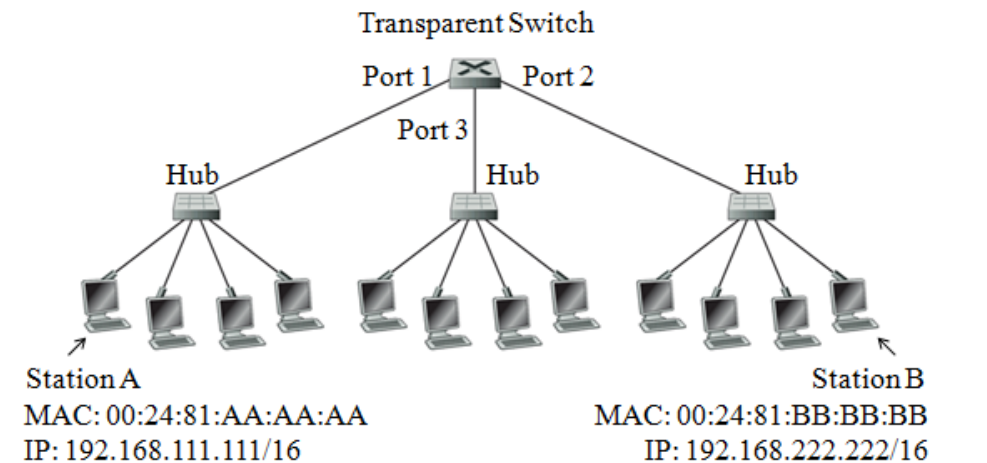
Table Q1 has the columns Frame, MAC address (Source, Destination), Purpose of Frame and Actions taken by the Switch. For simplicity, assume ping sends 1 packet instead of 4.
Answer
Step 1: local or remote? A is 192.168.111.111/16 and B is 192.168.222.222/16. Both AND to 192.168.0.0, so B is local. There is no router. A ARPs for B itself.
| Frame | Source MAC | Destination MAC | Purpose | Actions of the switch |
|---|---|---|---|---|
| 1 | 00-24-81-AA-AA-AA | FF-FF-FF-FF-FF-FF | ARP request for 192.168.222.222 | New table entry: AA-AA-AA on port 1. Broadcast, so flood to ports 2 and 3. |
| 2 | 00-24-81-BB-BB-BB | 00-24-81-AA-AA-AA | ARP reply | New table entry: BB-BB-BB on port 2. Forward to port 1 only. |
| 3 | 00-24-81-AA-AA-AA | 00-24-81-BB-BB-BB | Ping request for 192.168.222.222 | Update the AA-AA-AA entry (new time). Forward to port 2 only. |
| 4 | 00-24-81-BB-BB-BB | 00-24-81-AA-AA-AA | Ping reply | Update the BB-BB-BB entry (new time). Forward to port 1 only. |
A sends frames 1 and 3 and receives frames 2 and 4. B learns A’s IP-to-MAC pair from frame 1, so B needs no ARP of its own.
Each hub repeats every frame to all stations on that hub, and a station ignores frames that are not for it. The left hub (A’s) and the right hub (B’s) see all four frames. The middle hub (port 3) sees only frame 1, the flood.
General method: frame table for a ping through a switch
- AND the destination with the sender’s mask. Local: the ARP target is the destination.
- Frame 1: the sender’s ARP request. Source = sender. Destination = broadcast. The switch learns the sender’s port and floods.
- Frame 2: the target’s ARP reply (unicast). The switch learns the target’s port and forwards to the sender’s port only.
- Frame 3 and 4: the ping request and reply. The switch only updates the entries and forwards to one port.
- If a cache or the switch table already has an entry, skip that step. That is how you shorten the table.
Extension B1.1. Right after Q1, Station A runs
ping 192.168.222.222 again. No cache has timed out. List
the frames and the switch’s actions.
Answer (Extension B1.1)
A already has B’s MAC in its ARP cache, so there is no ARP. Only the ping frames remain.
| Frame | Source | Destination | Purpose | Switch |
|---|---|---|---|---|
| 1 | AA-AA-AA | BB-BB-BB | Ping request | Both entries exist. Refresh A’s entry. Forward to port 2 only. |
| 2 | BB-BB-BB | AA-AA-AA | Ping reply | Refresh B’s entry. Forward to port 1 only. |
Extension B1.2. After Q1, a new station C on
the same hub as A (MAC 00:24:81:CC:CC:CC, IP
192.168.111.50/16) runs ping 192.168.222.222. C’s ARP cache
is empty. List the frames and the switch’s actions.
Answer (Extension B1.2)
C and B are in the same /16, so C ARPs for B. The switch already knows A (port 1) and B (port 2), but not C.
| Frame | Source | Destination | Purpose | Switch |
|---|---|---|---|---|
| 1 | CC-CC-CC | FF-FF-FF-FF-FF-FF | ARP request for 192.168.222.222 | New entry: CC-CC-CC on port 1. Flood to ports 2 and 3. |
| 2 | BB-BB-BB | CC-CC-CC | ARP reply | Known: C is on port 1. Forward to port 1 only. |
| 3 | CC-CC-CC | BB-BB-BB | Ping request | Forward to port 2 only. |
| 4 | BB-BB-BB | CC-CC-CC | Ping reply | Forward to port 1 only. |
Station A sees these frames on its hub too, because a hub repeats everything. A ignores them, because they are not addressed to A.
B3.2 Ping through a router
Tutorial 2.2 Q2. Now consider the three hub-based Ethernets being interconnected by a router, which is configured as the default gateway for all stations as shown in Figure Q2. Assume that all ARP caches are initially empty.
Similarly, suppose that a user at Station A issues a command
ping 192.168.222.222. Using a table similar to Table Q2,
list the sequence of Ethernet frames that are being sent and received at
Station A, the purposes of the frames (e.g. Ping request for
192.168.222.222), and the actions taken by the router upon receiving the
frames.
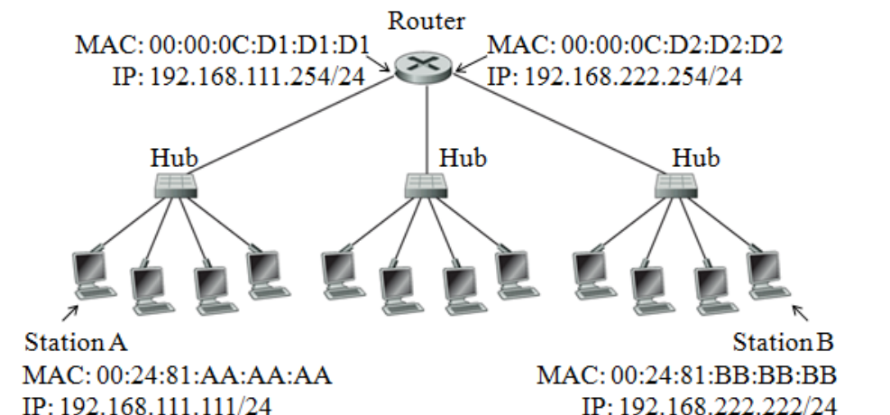
Answer
Step 1: local or remote? A is 192.168.111.111/24. B is in 192.168.222.0/24, so B is remote. A ARPs for the default gateway, 192.168.111.254. For simplicity, assume ping sends 1 packet instead of 4.
| Frame | Source MAC | Destination MAC | Purpose | Actions of the router |
|---|---|---|---|---|
| 1 | 00-24-81-AA-AA-AA | FF-FF-FF-FF-FF-FF | ARP request for the default gateway 192.168.111.254 | New ARP cache entry: 192.168.111.111 = 00-24-81-AA-AA-AA. Send an ARP reply. |
| 2 | 00-00-0C-D1-D1-D1 | 00-24-81-AA-AA-AA | ARP reply | (sent in frame 1’s action) |
| 3 | 00-24-81-AA-AA-AA | 00-00-0C-D1-D1-D1 | Ping request for 192.168.222.222 | Broadcast an ARP request for 192.168.222.222 on subnet 192.168.222.0/24. Receive the ARP reply. New ARP cache entry: 192.168.222.222 = 00-24-81-BB-BB-BB. Forward the ping request to 192.168.222.222. |
| 4 | 00-00-0C-D1-D1-D1 | 00-24-81-AA-AA-AA | Ping reply | Receive the ping reply. Forward it to 192.168.111.111. |
What A does not see. The router’s ARP exchange with B and the forwarded ping happen on the right LAN, so A sees none of them. On that LAN the frames are: ARP request (D2 → broadcast), ARP reply (B → D2), ping request (D2 → B), ping reply (B → D2).
In frame 3 the Ethernet destination is the router’s MAC (D1-D1-D1), but the IP destination is B (192.168.222.222).
General method: frame table for a ping through a router
- Local or remote? Remote: the ARP target is the gateway.
- On A’s LAN: ARP request for the gateway, ARP reply from the gateway, then the ping request (Ethernet destination = gateway MAC, IP destination = B), and later the ping reply.
- The router learns A’s MAC from A’s ARP request, so it needs no ARP on A’s side for the reply.
- On B’s LAN, the router acts as a host: it ARPs for B, then sends the request in a new frame. Station A never sees these frames.
- A station lists only frames on its own LAN. Count the frames it sends and receives.
Extension B2.1. In Q2’s network, A has already pinged B, so A’s ARP cache holds the gateway. Now A pings a new station B2 on the right LAN (192.168.222.100, MAC 00:24:81:DD:DD:DD). The router’s ARP cache holds only A’s entry. How many frames does A send and receive? List the frames on the right LAN too.
Answer (Extension B2.1)
A’s cache already holds the gateway’s MAC, so A needs no ARP. A sends 1 frame and receives 1 frame.
| LAN | Source MAC | Destination MAC | Purpose |
|---|---|---|---|
| Left | AA-AA-AA | D1-D1-D1 | Ping request (IP destination 192.168.222.100) |
| Right | D2-D2-D2 | FF-FF-FF-FF-FF-FF | Router’s ARP request for 192.168.222.100 |
| Right | DD-DD-DD | D2-D2-D2 | ARP reply |
| Right | D2-D2-D2 | DD-DD-DD | Ping request, TTL reduced by 1 |
| Right | DD-DD-DD | D2-D2-D2 | Ping reply |
| Left | D1-D1-D1 | AA-AA-AA | Ping reply |
The router must ARP on the right, because it has no entry for B2. A sees only the first and last rows.
Extension B2.2. In Q2’s network, a technician sets
Station A to 192.168.111.111 with mask 255.255.0.0 by
mistake. The gateway is still 192.168.111.254. A runs
ping 192.168.222.222. What happens?
Answer (Extension B2.2)
With a /16 mask, both addresses AND to 192.168.0.0, so A thinks B is local. A sends an ARP request for B itself (192.168.222.222), not for the gateway.
The request is an Ethernet broadcast on the left LAN. The router receives it but does not forward it, and the router does not own 192.168.222.222. Nobody replies. A has no MAC for B, so it never sends the ping request. The ping fails.
Fix: use the correct mask, 255.255.255.0. A then ARPs for the gateway, exactly as in Q2.
B4. IPv4 Fragmentation
B4.1 MTU
The MTU (Maximum Transmission Unit) is the largest IP packet that a link can carry. It counts the IP header + IP data. It does not count the Ethernet header and trailer. Different links can have different MTUs. When a packet is bigger than the next link’s MTU, an IPv4 router can split it into fragments.
B4.2 The header fields
| Field | Meaning |
|---|---|
| Total Length | The size of this packet or fragment in bytes: header + data. |
| IHL (Internet Header Length) | The header length in 32-bit words. IHL = 5 means bytes. |
| Identification (ID) | The same value in every fragment of one datagram. It groups them together. |
| Fragment Offset | Where this fragment’s data starts in the original data, in units of 8 bytes. |
| DF (Don’t Fragment) | DF = 1: the router must not fragment. If the packet is too big, the router drops it and normally sends ICMP “fragmentation needed”. |
| MF (More Fragments) | MF = 1: more fragments follow. The last fragment has MF = 0. |
- Every fragment gets its own IP header.
- Only the final destination puts the fragments back together (reassembly). Routers in between do not. The destination groups fragments by ID, source, destination and protocol.
- Offsets put the data back in place even if fragments arrive out of order.
B4.3 Method
- Data size: original data = Total Length − header (usually 20 bytes). Read carefully whether the question gives the total length or the data length.
- Space per fragment: MTU − 20.
- Round down to a multiple of 8: max data per fragment . Every fragment except the last must carry a multiple of 8 data bytes, because offsets count in 8-byte units.
- Number of fragments: . The last fragment carries what is left.
- For each fragment: Total Length = data + 20. Offset = (start byte) / 8. MF = 1 except for the last. ID = the original ID.
- Check: the data adds up to the original; every Total Length MTU; only the last has MF = 0.
B4.4 Lecture examples
Example 1. Total Length 2420 bytes, 20-byte header, MTU 1000, DF = 0, ID = 77.
- Data bytes.
- Space , so max data bytes.
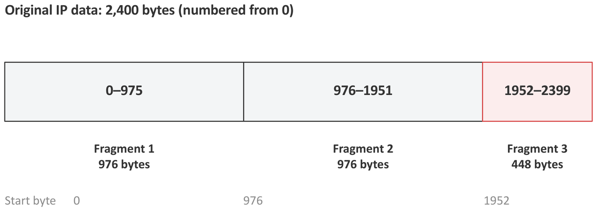
| Fragment | Data bytes | Total Length | Offset | MF | ID |
|---|---|---|---|---|---|
| 1 | 976 | 996 | 0 | 1 | 77 |
| 2 | 976 | 996 | 976/8 = 122 | 1 | 77 |
| 3 | 448 | 468 | 1952/8 = 244 | 0 | 77 |
Example 2. Total Length 2020, MTU 620, ID 88. Data . Space , already a multiple of 8. Four fragments carry 600, 600, 600 and 200 bytes, at offsets 0, 75, 150 and 225.
A quick check on offsets. Each offset equals the previous offset plus the previous fragment’s data divided by 8.
B4.5 Tutorial 2.1 Q4
Tutorial 2.1 Q4. Consider sending a 3000 byte datagram into a link that has an MTU of 500 bytes. Suppose the original datagram is stamped with the identification number 422. How many fragments are generated? What are their characteristics?
Answer
- Data bytes.
- Space bytes. , so no rounding is needed.
- Number of fragments 7.
- Six fragments carry 480 bytes each (). The seventh carries bytes.
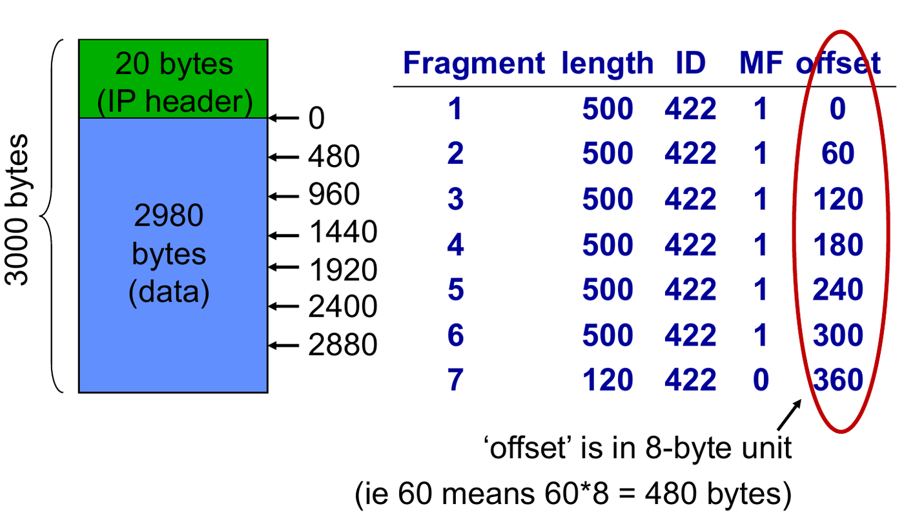
| Fragment | Data | Length | ID | MF | Offset |
|---|---|---|---|---|---|
| 1 | 480 | 500 | 422 | 1 | 0 |
| 2 | 480 | 500 | 422 | 1 | 60 |
| 3 | 480 | 500 | 422 | 1 | 120 |
| 4 | 480 | 500 | 422 | 1 | 180 |
| 5 | 480 | 500 | 422 | 1 | 240 |
| 6 | 480 | 500 | 422 | 1 | 300 |
| 7 | 100 | 120 | 422 | 0 | 360 |
Check: , the start of the last fragment, and . ✓
General method: a fragmentation table
- Data Total Length .
- Max data .
- . The last fragment has bytes.
- Offsets: 0, then add (max data)/8 each time.
- Total Length = data + 20. MF = 1, except 0 on the last. ID is the same everywhere.
- Check that the data adds up and that no length is above the MTU.
Extension B4.1. A datagram has Total Length 4000 bytes, a 20-byte header and ID 9. It enters a link with MTU 1500. Build the fragment table.
Answer (Extension B4.1)
Data . Space , so no rounding. fragments, carrying 1480, 1480 and bytes.
| Fragment | Data | Total Length | Offset | MF | ID |
|---|---|---|---|---|---|
| 1 | 1480 | 1500 | 0 | 1 | 9 |
| 2 | 1480 | 1500 | 1480/8 = 185 | 1 | 9 |
| 3 | 1020 | 1040 | 2960/8 = 370 | 0 | 9 |
Extension B4.2. A datagram has Total Length 1500 bytes and a 20-byte header. It enters a link with MTU 600. Build the fragment table. Why can a fragment not carry 580 bytes?
Answer (Extension B4.2)
Data . Space . But , so a fragment of 580 bytes would be followed by a fragment whose offset is not a whole number. Round down: max data .
fragments: 576, 576 and bytes.
| Fragment | Data | Total Length | Offset | MF |
|---|---|---|---|---|
| 1 | 576 | 596 | 0 | 1 |
| 2 | 576 | 596 | 576/8 = 72 | 1 |
| 3 | 328 | 348 | 1152/8 = 144 | 0 |
Check: , and every length is at most 600. ✓
Extension B4.3 (unofficial, not in the lecture). One of the fragments from Q4 (the 2nd: Total Length 500, 480 data bytes, offset 60, MF = 1, ID 422) now meets a link with MTU 300. What does the router send?
Answer (Extension B4.3)
Not in the lecture. This is standard IPv4 behaviour: a router can fragment a fragment, using the same rules.
Space . The 480 data bytes split into 280 and 200.
| New fragment | Data | Total Length | Offset | MF | ID |
|---|---|---|---|---|---|
| 2a | 280 | 300 | 60 | 1 | 422 |
| 2b | 200 | 220 | 60 + 35 = 95 | 1 | 422 |
The offset continues from the old offset. Fragment 2b keeps MF = 1, because the original fragment was not the last one: more data (fragments 3 to 7) still follows. Only if the original fragment had MF = 0 would 2b have MF = 0. The destination reassembles all pieces by the one ID and the offsets.
B4.6 What if one fragment is lost?
The destination needs every fragment. If one is missing when the reassembly timer runs out, it discards the whole datagram. IP does not ask for the missing piece. TCP or the application must recover the data.
So the probability that the whole packet arrives is:
for fragments, each lost with probability .
- 5 fragments, each lost with : . More than one packet in five is lost, although each fragment is lost only one time in twenty.
- If the sender sends each fragment twice, a fragment is lost only if both copies are lost: . Then .
Extension B4.4. A datagram becomes 6 fragments. Each fragment is lost with probability 0.1, independently. What is the probability that the datagram arrives? What if each fragment is sent twice?
Answer (Extension B4.4)
- Sent once: 0.531.
- Sent twice: a fragment is lost only if both copies are lost, so and 0.941.
Sending twice raises the chance from about 53% to about 94%, but it doubles the traffic.
B4.7 Packet size is a trade-off
- Large packets: fewer headers and fewer packets to process. But one loss destroys more data.
- Small packets: less data lost per loss, and a shorter time to send each packet. But more header overhead. (Lecture: 5600 bytes as 4 × 1400 carries 80 header bytes; as 8 × 700 it carries 160.)
Fragmentation is not a way to make delivery more reliable.
B4.8 DF and Path MTU Discovery
- DF = 0: the router may fragment. The destination must reassemble.
- DF = 1: the router drops the oversized packet and normally reports ICMP “fragmentation needed”.
- Path MTU Discovery uses that ICMP feedback, so the sender learns to send packets that fit. If the feedback is blocked, small pings work but large transfers fail.
- A tunnel adds headers (for example 100 bytes). A 1500-byte inner packet becomes 1600 bytes and does not fit an MTU of 1500. The fix is to send 1400-byte inner packets.
Each router on the path reassembles the fragments before it forwards them.
False. Only the final destination reassembles. Routers forward each fragment on its own.
The fragment offset field counts bytes.
False. It counts units of 8 bytes. An offset of 60 means byte .
Sending a packet as fragments makes delivery more reliable.
False. The datagram arrives only if every fragment arrives, so more fragments mean a lower chance: .
B5. ICMP, Ping and Traceroute
B5.1 ICMP
ICMP (Internet Control Message Protocol) carries control and error messages inside IP packets. It reports problems. It does not repair them.
| Message | Meaning | Example |
|---|---|---|
| Echo Request / Echo Reply | Testing reachability | ping |
| Destination Unreachable | The packet could not be delivered | No route; or fragmentation needed with DF = 1 |
| Time Exceeded | TTL reached 0 at a router | traceroute uses this |
B5.2 What ping tells you
- A reply proves that ICMP worked for that probe. It does not prove that the application (for example the website) works.
- A timeout only says that no reply came in time. It does not tell you the cause. Possible causes: a wrong gateway, a missing route on a router, a firewall rule, a wrong address or gateway on the server, or a server that is set not to answer pings.
- DNS is not needed when you ping a numeric address.
- In the output,
time= the round-trip time, andTTL= the TTL left in the reply.
B5.3 TTL
TTL (Time To Live) is an IPv4 header field that limits how many routers a packet can pass. Each router decreases TTL by 1. When TTL reaches 0, the router discards the packet and normally sends ICMP Time Exceeded back to the source. This stops a packet from going round a routing loop for ever.
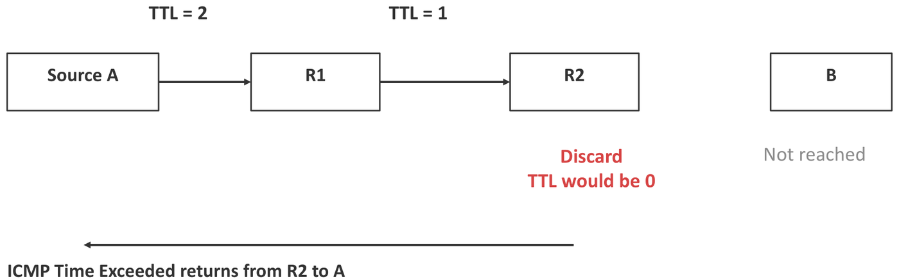
B5.4 How traceroute works
traceroute (tracert on Windows) sends
probes with TTL = 1, then 2, then 3, and so on.
- The TTL = 1 probe dies at the 1st router, which replies with Time Exceeded. Now we know router 1.
- The TTL = 2 probe dies at the 2nd router. Now we know router 2.
- This continues until a probe reaches the destination, which sends an Echo Reply.
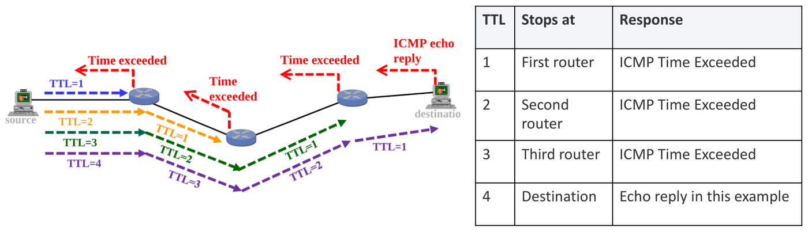
Reading the output: each row is one hop. The three times are the round-trip times of three probes. Then comes the address of the router interface that replied.
- A
*means that no reply arrived before the timeout. The router may still forward traffic normally. (Many routers do not answer probes.) - Traceroute combines the replies to different probes. It is not one packet that reports its whole journey. Different probes can take different paths.
B5.5 Why the reverse trace shows different addresses
A router has several interfaces, each with its own IP address. In these questions, assume a router replies with the interface towards the source. So the same router shows a different address in the trace from A to B and in the trace from B to A.
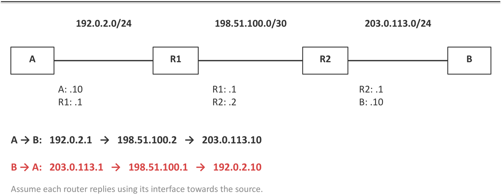
| Direction | Hops shown |
|---|---|
| A → B | 192.0.2.1 (R1) → 198.51.100.2 (R2) → 203.0.113.10 (B) |
| B → A | 203.0.113.1 (R2) → 198.51.100.1 (R1) → 192.0.2.10 (A) |
A successful ping to a web server shows that the website works.
False. A reply shows only that the host answers ICMP. The web service on that host can still be down.
A * in a traceroute line means that the router is broken.
False. It means that no reply came before the timeout. Many routers forward packets but do not answer probes.
B6. Rebuilding a Topology from Traceroutes
B6.1 Method
- For each trace, write the source, every hop in order, and the destination.
- The last line of a trace is the destination host. The first line is the source’s gateway (the interface on the source’s LAN).
- Group addresses by network (use the given masks). Two addresses on the same network are the two ends of one link, or two interfaces on one LAN.
- Find addresses that belong to the same router. Remember that a router replies with its interface towards the source, so the same router shows a different address in each direction.
- Draw one diagram that explains every trace. If masks are missing, state your assumption. Traces alone may not give one unique answer.
If a question gives no masks and tells you to assume classful boundaries, use the first octet: 1–126 gives /8, 128–191 gives /16, and 192–223 gives /24 (Part A, Section A3). In modern classless addressing, always use the given prefix or mask instead.
B6.2 Tutorial 2.2 Q3
Tutorial 2.2 Q3. The following table shows the results of three trace-routes. Based on the information, draw the network topology. Show clearly the IP addresses of all networks.
| From Station A to B | From Station C to A | From Station B to C |
|---|---|---|
| 155.69.8.10 | 200.20.80.12 | 196.19.5.104 |
| 10.203.20.10 | 170.105.10.21 | 130.21.80.90 |
| 130.21.10.30 | 80.90.10.3 | 90.80.120.10 |
| 196.19.5.5 | 155.69.8.12 | 170.105.10.20 |
| 200.20.80.15 |
The trace-route results do not give subnet masks. When identifying the network addresses, assume the historical classful boundaries below:
| First octet of the IP address | Historical class | Assumed network prefix |
|---|---|---|
| 1 to 126 | A | /8 |
| 128 to 191 | B | /16 |
| 192 to 223 | C | /24 |
For example, 155.69.8.9 falls within Class B. Using the assumed /16 prefix, its network address is 155.69.0.0/16. These assumptions apply only to this question. In modern classless addressing, use the specified prefix or subnet mask to find the network boundary.
Answer
Step 1: networks. Apply the classful prefixes: 155.69.0.0/16, 10.0.0.0/8, 130.21.0.0/16, 196.19.5.0/24, 80.0.0.0/8, 90.0.0.0/8, 170.105.0.0/16 and 200.20.80.0/24.
Step 2: hosts and the first router. The last line of each trace is the host: A = 155.69.8.12, B = 196.19.5.5, C = 200.20.80.15. The first line is that host’s gateway, on the host’s own network.
Step 3: read each trace. Each router shows its interface towards the source.
| Trace | Hop | Address | Router and network |
|---|---|---|---|
| A → B | 1 | 155.69.8.10 | R1, on A’s net 155.69/16 |
| 2 | 10.203.20.10 | R2, on net 10/8 (R1’s side) | |
| 3 | 130.21.10.30 | R3, on net 130.21/16 (R2’s side) | |
| 4 | 196.19.5.5 | B | |
| C → A | 1 | 200.20.80.12 | R5, on C’s net 200.20.80/24 |
| 2 | 170.105.10.21 | R4, on net 170.105/16 (R5’s side) | |
| 3 | 80.90.10.3 | R1, on net 80/8 (R4’s side) | |
| 4 | 155.69.8.12 | A | |
| B → C | 1 | 196.19.5.104 | R3, on B’s net 196.19.5/24 |
| 2 | 130.21.80.90 | R2, on net 130.21/16 (R3’s side) | |
| 3 | 90.80.120.10 | R4, on net 90/8 (R2’s side) | |
| 4 | 170.105.10.20 | R5, on net 170.105/16 (R4’s side) | |
| 5 | 200.20.80.15 | C |
Step 4: join the routers. Two routers that show addresses on the same network share that link.
- R1 and R2 share net 10/8 (A → B, hop 2).
- R2 and R3 share net 130.21/16, and R3 reaches B on 196.19.5/24.
- R1 and R4 share net 80/8 (C → A, hop 3).
- R2 and R4 share net 90/8 (B → C, hop 3).
- R4 and R5 share net 170.105/16, and R5 reaches C on 200.20.80/24.
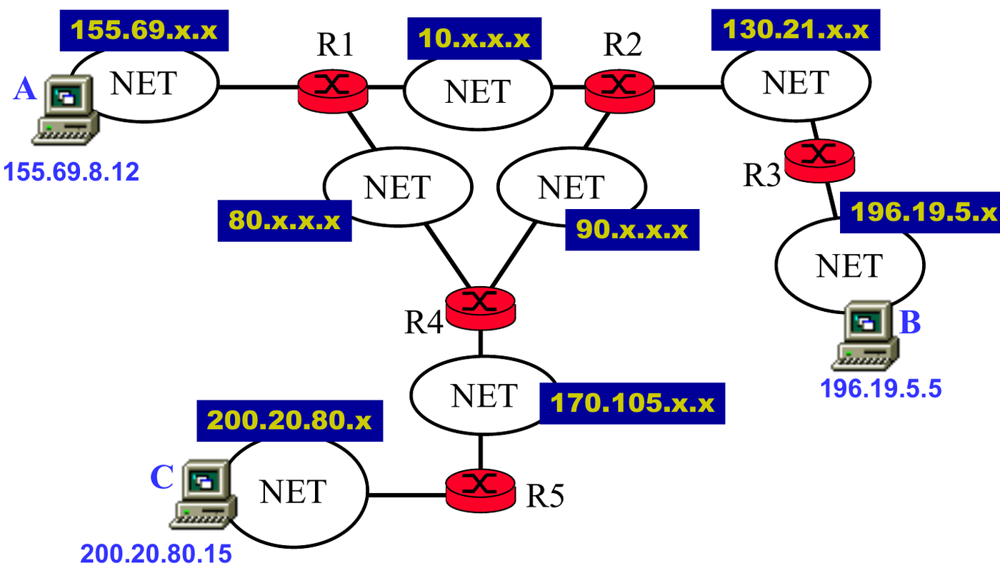
Check: A → B goes R1, R2, R3. C → A goes R5, R4, R1. B → C goes R3, R2, R4, R5. Every address in each trace is on the network that the picture shows.
General method: a topology from traceroutes
- Find each network’s address from the given masks (or the assumed classful ones).
- Mark the host (last line) and its gateway (first line) for each trace.
- For every middle hop, say which router it is and which network its interface is on. That network lies between that router and the previous hop.
- Two routers whose replies are on the same network share a link on that network.
- Draw all routers and networks, then replay each trace on your drawing. Each hop must be on the network that it names.
- A trace shows only the links that it used. Say so if other links might exist.
Extension B3.1. Three hosts X, Y and Z run traceroute to each other. Every network is a /24. Draw the topology.
| From X to Y | From Y to Z | From Z to X |
|---|---|---|
| 192.168.1.1 | 192.168.2.1 | 192.168.3.1 |
| 10.0.12.2 | 10.0.23.2 | 10.0.24.2 |
| 10.0.23.3 | 10.0.24.4 | 10.0.12.1 |
| 192.168.2.20 | 192.168.3.30 | 192.168.1.10 |
Answer (Extension B3.1)
Hosts and gateways. The last lines give the hosts: Y = 192.168.2.20, Z = 192.168.3.30, X = 192.168.1.10. The first lines give the gateways: R1 (192.168.1.1, on X’s LAN), R3 (192.168.2.1, on Y’s LAN) and R4 (192.168.3.1, on Z’s LAN).
The hop before each host is that host’s gateway, seen from the other side.
- In X → Y, the hop before Y is 10.0.23.3. So R3 also owns 10.0.23.3.
- In Y → Z, the hop before Z is 10.0.24.4. So R4 also owns 10.0.24.4.
- In Z → X, the hop before X is 10.0.12.1. So R1 also owns 10.0.12.1.
The router in the middle. Each trace has one hop left: 10.0.12.2, 10.0.23.2 and 10.0.24.2. Each is on the same /24 as one gateway’s link address (10.0.12.1, 10.0.23.3, 10.0.24.4), so each is the far end of that link. One router, R2, with all three interfaces, explains all three traces.
LAN X 192.168.1.0/24 — R1 —(10.0.12.0/24)— R2 —(10.0.23.0/24)— R3 — LAN Y 192.168.2.0/24
|
(10.0.24.0/24)
|
R4 — LAN Z 192.168.3.0/24Check: X → Y goes R1, R2, R3. Y → Z goes R3, R2, R4. Z → X goes R4, R2, R1. Each reply address is that router’s interface on the network that the packet came in from. ✓
Extension B3.2. Traceroutes show these addresses inside two organisations. Organisation P: 150.40.66.9, 150.40.70.3 and 150.40.79.200. Organisation Q: 120.8.130.5 and 120.8.131.77. Find the smallest CIDR block that holds each organisation’s addresses.
Answer (Extension B3.2)
Take the longest common prefix of the addresses (Part A, Section A7).
| Organisation | Changing octet in binary | Shared bits | Block |
|---|---|---|---|
| P | 66 = 0100 0010, 70 = 0100 0110, 79 = 0100 1111 | 4 | 16 + 4 = /20, so 150.40.64.0/20 |
| Q | 130 = 1000 0010, 131 = 1000 0011 | 7 | 16 + 7 = /23, so 120.8.130.0/23 |
Check: 150.40.64.0/20 covers 64–79 in the 3rd octet, and 66, 70 and 79 are inside. 120.8.130.0/23 covers 130–131. ✓
Exam patterns
Tutorial sources: Tutorial 2.2 Q1 (ping through a switch), Q2 (ping through a router), Q3 (topology from traceroutes); Tutorial 2.1 Q4 (fragmentation). The other patterns come from the lecture’s own examples. Past-year papers are not in these notes.
| Question type | How to attack it | Trap |
|---|---|---|
| Frame table for a ping | Local or remote first, then ARP target, then the four frames. Count only frames on the station’s own LAN. | Putting the destination’s MAC in a frame for a remote host. Listing frames A cannot see. |
| Switch actions | Learn the source. Forward on the destination. Flood broadcast and unknown. | Learning from the destination |
| Router actions | Update ARP cache, ARP on the far side if needed, new frame, TTL | Forgetting the router’s own ARP on the other LAN |
| Wrong mask | AND with the host’s mask. Local means ARP for the target, which nobody answers. | Using the correct mask in your head |
| Longest-prefix match | List all matches, take the largest /n |
Forgetting that the more specific entry must contain the address |
| Fragmentation table | Data, max data (round down to 8), count, offsets, MF | Not rounding to a multiple of 8. Using bytes for the offset. MF = 1 on the last. |
| Loss with fragments | . Sent twice: | Using |
| Topology from traceroutes | Last line = host, first line = gateway, routers reply with the interface towards the source | Treating two addresses of one router as two routers |
| True/false | ARP request is broadcast. Switch learns the source. Only the destination reassembles. Ping reply is not application proof. | See Common Traps |
Common Traps
- Host decision: AND the destination with its own mask. Local: ARP the destination. Remote: ARP the gateway.
- Remote frames: the Ethernet destination is the gateway’s MAC, but the IP destination is still the final host.
- What changes per hop: the MAC addresses change on every hop, and TTL decreases by 1 with a new checksum. IP addresses stay the same (no NAT).
- ARP: the request is an Ethernet broadcast and the reply is a unicast. Routers never forward ARP.
- Switch: it learns from the source MAC, forwards on the destination MAC, and floods broadcasts and unknown destinations.
- One LAN at a time: a station sees only the frames on its own LAN.
- Longest-prefix match: check that the entry matches first, then take the largest /n. The default route /0 is the last choice.
- MTU counts the IP header and data, not the Ethernet header.
- Fragments: data per fragment is a multiple of 8 (except the last). Offset = start byte / 8. Last MF = 0. Same ID in all. A fragment can be fragmented again. Reassembly happens only at the destination.
- Read the size: check whether a size is the Total Length or the data length before you subtract the header.
- Loss: . One lost fragment loses the whole datagram.
- Ping: a reply proves ICMP works, not that the application works. A timeout does not tell you the cause.
- Traceroute: a router replies with the interface
towards the source.
*does not mean the router is broken.